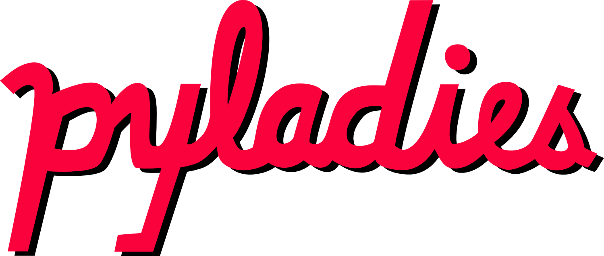
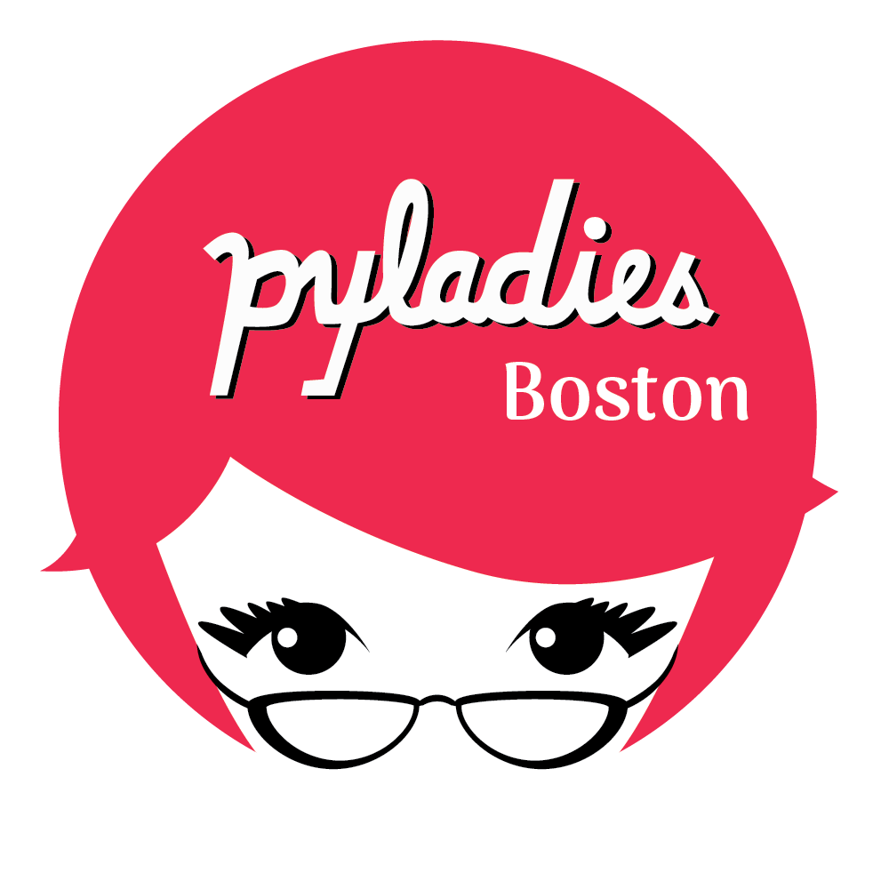

Muzammil Soorma via unsplash.com
We're the Boston chapter of PyLadies, an international mentorship group for underrepresented genders in the Python community such as, but not limited to, women, trans people, and non-binary people. We welcome Python enthusiasts, developers, and programmers of all coding proficiency levels in the Greater Boston, Massachusetts area and throughout New England.
We host monthly events, talks, and study groups where you can meet other pythonistas and learn more about programming, data science, web development, and more.
All skill levels welcome!
Join our Meetup group to hear about our free events. We meet on the second Friday of the month at noon for our monthly "Grab a Byte" virtual lunch series, plus special events throughout the year.
Interested in hosting us, giving a talk, or leading a workshop? We'd love to hear from you!
PyLadies Boston is led by a dedicated team of volunteer organizers including Fay Shaw and others who work to create an inclusive, welcoming community for Python enthusiasts of all skill levels.
Our organizers bring diverse backgrounds in software engineering, data science, education, and community building. Together, we host monthly meetups, workshops, and special events throughout the Greater Boston area.
Meet our full organizing team on Meetup. Interested in volunteering or organizing with us? We'd love to hear from you!
PyLadies is an international mentorship group with a focus on helping more women become active participants and leaders in the Python open-source community.
Our mission is to promote, educate and advance a diverse Python community through outreach, education, conferences, events and social gatherings.
To learn more, visit the PyLadies website.
Follow us on LinkedIn or join our Meetup group to get announcements and find out about upcoming events.
To connect with other PyLadies members through Slack, join
slackin.pyladies.com
and sign up for the #boston channel.
If you would like to give a tech talk, demo, or workshop, or if your company is interested in hosting an event, reach out to us on Meetup or connect with the organizers on Slack at #boston.